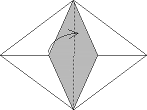
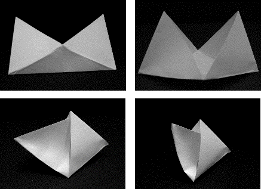

6. Open up the remaining envelope and fold the left half into the right half, or vice-versa, by folding along the fold last made.
|  |
The left part folded into the right part along the dotted line (the last fold made). The interior is shaded.
|  |
| The folding sequence |
Return to Sierpinski Tetrahedron Procedure.